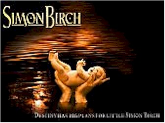
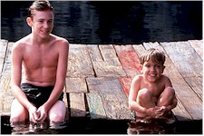

Contents | Features | Reviews | Books | Archives | Store |
 |
|
| Movie Credits | Buy It! |
Simon Birch
Review by Elias Savada
Posted 11 September 1998
|  | Directed by Mark Steven Johnson. Starring
Ian Michael Smith, Joseph Mazzello, Written by Mark Steven Johnson, |
Johnson, who penned Grumpy Old Men and its sequel, graduates to a piece (truncated in spades from John Irving’s Prayer for Owen Meany) squarely resting on two individuals generations younger than the stars of his earlier efforts. And while these two kids give it the ole Sunday school try, they’re placed in a void of a thirty-something flash-back screenplay that punctures any possible tension in the screenplay by telling us (through a cloying voice-over by a non-comedic Jim Carrey as one of these stars many years later) two key plot developments at the film’s opening.
This slow moving tale centers on the friendship of one simple Simon (Ian Michael Smith), a pint-sized pre-teen with a big heart and grand intentions, and his best friend, the bright Joe Wenteworth (Jurassic Park’s Joseph Mazzello), a son born out of wedlock to an earth-goddess mother (Kiss the Girls’ Ashley Judd). Her refusal to reveal the identity of Joe’s father in 1960s America would suggest her being branded an outcast, but her immaculate honesty and stunning beauty instead merit worship by many of the town’s male population, especially the diminutive Simon. Go figure. Smith, a truly gifted non-actor, has most of the best moments in the film and shows a genuine gusto in tackling the role of one of life’s "peculiar little disappointments."
 When a foul ball hit
by Simon removes Rebecca Wenteworth from the picture, the film begins to further deflate.
The boys embark on a stealth quest in search of Joe’s dad, while Simon continues his
nagging and endless commentary on his heroic destiny. Sprinkled about their playing field
are a handful of talented actors in search of a script. Jan Hooks is the autocratic Agnes
Leavey, a prissy bible-belt teacher who gets a hellish comeuppance courtesy of "Baby
Jesus" Simon’s sudden infatuation with a fellow schoolmate’s budding
bustline at the Christmas Pageant. (I guess even martyrs-to-be are human.) Oliver Platt (Funny
Bones, Bulworth) is local drama teacher Ben
Goodrich, a intrepid suitor of Rebecca’s affections who befriends the boys with a
stuffed armadillo and a plateful of peas, then later offers heartfelt homilies as
pseudo-dad/cheerleader to the youngsters in lieu of proper instruction from Rebecca or the
local priest, acceleratingly morose Reverend Russell (David Straithairn).
When a foul ball hit
by Simon removes Rebecca Wenteworth from the picture, the film begins to further deflate.
The boys embark on a stealth quest in search of Joe’s dad, while Simon continues his
nagging and endless commentary on his heroic destiny. Sprinkled about their playing field
are a handful of talented actors in search of a script. Jan Hooks is the autocratic Agnes
Leavey, a prissy bible-belt teacher who gets a hellish comeuppance courtesy of "Baby
Jesus" Simon’s sudden infatuation with a fellow schoolmate’s budding
bustline at the Christmas Pageant. (I guess even martyrs-to-be are human.) Oliver Platt (Funny
Bones, Bulworth) is local drama teacher Ben
Goodrich, a intrepid suitor of Rebecca’s affections who befriends the boys with a
stuffed armadillo and a plateful of peas, then later offers heartfelt homilies as
pseudo-dad/cheerleader to the youngsters in lieu of proper instruction from Rebecca or the
local priest, acceleratingly morose Reverend Russell (David Straithairn).
Of course, the discovery of Joe’s dad’s identity and saintly Simon’s "I-told-you-so" heroics bring the film crashing to its icy saccharine conclusion. And it’s definitely several tear-inducing moments overdue…for me and probably for you. Hey, if you want a sugar fix, go buy a milkshake. Geez, guess I really am just a grumpy old man.
Contents | Features | Reviews | Books | Archives | Store
Copyright © 1999 by Nitrate Productions, Inc. All Rights Reserved.